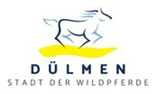
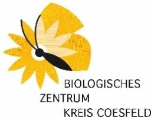
Wildpark-Rallye
Eine Wanderung für die ganze Familie
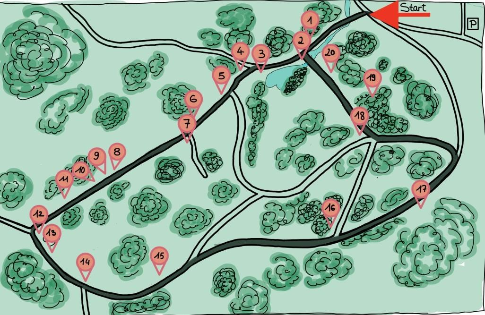
Der Wildpark Dülmen ist seit dem Jahr 1860 im Besitz der Herzöge von Croy. Nach ihren Plänen wurde das Gelände gestaltet. So entstand der Herzteich mit Holzbrücke, Wiesen mit einzelnen Baumgruppen und kleine Hügel – wie es in einem englischen Landschaftspark typisch ist. Beeindruckend sind die alten Baumbestände und die unterschiedlichen Waldtypen.
Vor allem Damwild fühlt sich heimisch im heute 250 Hektar großem Wildpark, ebenso wie zahlreiche Vogelarten, Schafe und Heidschnucken.
Mit etwas Glück begegnest Du sogar dem König des Waldes – dem Rothirsch!
Der Park ist ganzjährig kostenfrei zugänglich!
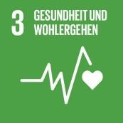
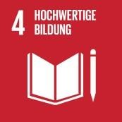
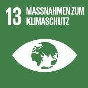
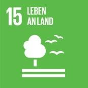
Wir laden dich zu einer spannenden Erkundungsreise in den Wildpark Dülmen ein. Du kannst an 20 Stationen viele Dinge entdecken, erforschen und Spaß haben! Es erwarten dich Rätsel und andere Aufgaben! An jeder Station kannst du dir Lösungsbuchstaben verdienen, welche zum Schluss einen Lösungssatz ergeben. Hast du alle Stationen erfolgreich gemeistert, darfst du dir im Biologischen Zentrum in Lüdinghausen oder bei Dülmen-Marketing e.V., Viktorstraße 6 in Dülmen eine Wildpark-Medaille abholen.
Start: Naturwildpark Dülmen (Eingangstor), Hinderkingsweg 97
Länge: ca. 4 km
Wir wünschen dir und deiner Familie nun viel Spaß im Wildpark!
Wenn du Lust auf weitere Erlebniswanderungen bekommen hast, kannst du noch unsere Klutensee-Rallye in Lüdinghausen und die Hirschpark-Rallye in Nordkirchen erleben oder das Biologische Zentrum erkunden.
Auch hier gibt es Vieles zu entdecken.
Weitere Infos dazu findest du unter www.biologisches-zentrum.de.
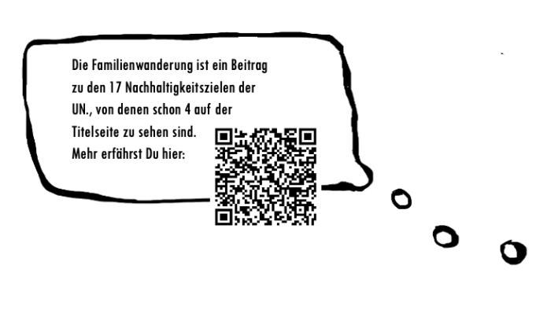
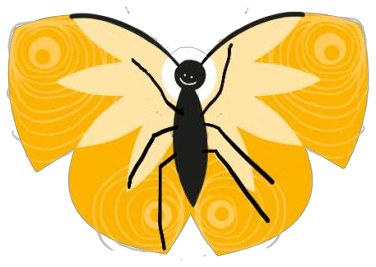
Zieh dich wetterfest an. Denk an festes Schuhwerk und ggf. Sonnencreme. Führe die Tour nicht bei Sturm durch!
Denk auch daran, Essen und Getränke für ein Picknick mitzunehmen, denn die Wildpark-Rallye dauert ca. 2 Stunden.
Waldtiere
Bestimmungshilfe
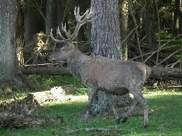
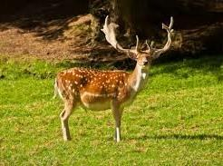
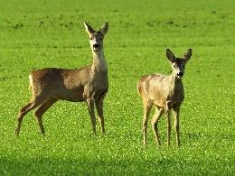
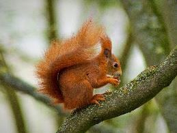
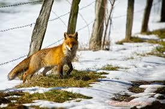
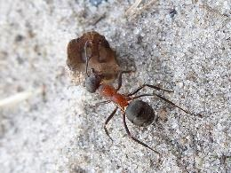
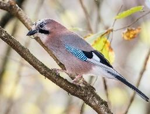
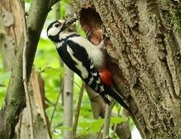
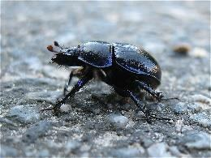
Bäume
Bestimmungshilfe
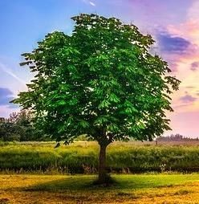
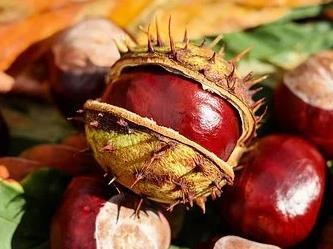
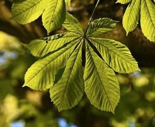
Kastanie
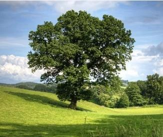
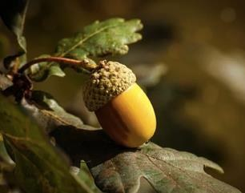
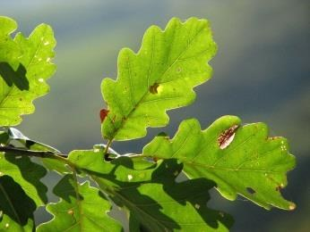
Eiche
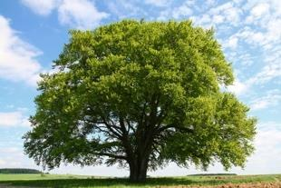
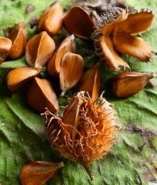
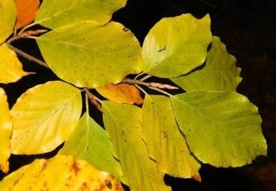
Buche
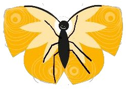
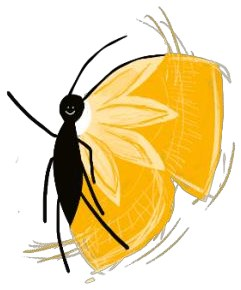
Station 1
Bäume an der Bank
Hinter dem Tor führt dich der linke Weg zu einer Bank auf der rechten Seite. Schau dir die Bäume hinter der Bank an und versuche mit Hilfe der Bilder zu bestimmen, um welche Bäume es sich handelt. Schau auch unter den Bäumen nach Hinweisen – dort findest du z.Bsp. Früchte und Blätter.
→ Bestimmungshilfe Bäume ansehen
Frage: Wie heißen die Bäume, die hinter der Bank stehen?
Station 2
Baumhöhe bestimmen - Försterdreieck
Wenn du den Weg weiterläufst, gelangst du zu einem mächtigen Baum an der Brücke: eine Eiche. Mit einer einfachen Methode kannst du die ungefähre Baumhöhe bestimmen: Suche einen Stock, der so lang ist wie dein Arm. Halte nun den Stock mit waagerecht ausgestrecktem Arm vor dir nach oben, sodass deine Faust in Augenhöhe liegt. Gehe mit ausgestrecktem Arm so weit zurück bis du über die Stockspitze den angepeilten Baumwipfel siehst. Lauf nun von dort aus in 1-Meter-Schritten zum Baum und zähle mit. Rechne nun deine Körperhöhe bis zu deinen Augen hinzu.
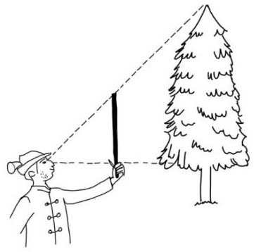
Frage: Wie hoch ist der Baum? Deine Lösung: m
- ca. 5 m (N)
- ca. 25 m (A)
- ca. 50 m (E)
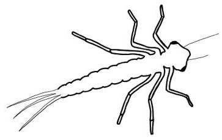
Station 3
Tiere im und am Herzteich
Lauf am Teich entlang und halte die Augen auf – bis du an der nächsten Bank ankommst. Kreuz alle Tiere an, die du gesehen hast.
Tipp: Beobachte auch vom Uferrand aus (Bewege dich dabei nicht!)
Aufgabe: Welche Tiere hast du entdeckt? Kreuze an!
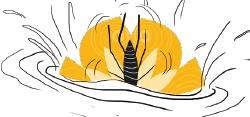
Frage: Welches Tier klammert sich hier an den Halm?
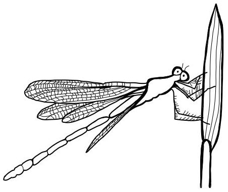
Station 4
Tiere im Wildpark
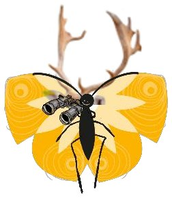
Folge der linken Abzweigung: Markierung A 3/4
Rothirsche, Damhirsche, Rehe – alle gehören sie zu der Familie der Hirsche. Dennoch gibt es Unterschiede!
Aufgabe: Ordne zu!
- 1 Rehwild
- 2 Damwild
- 3 Rotwild
- größte Hirschart
- kleinste Hirschart
- weiße Flecken auf dem Sommerfell (auch die erwachsenen Tiere)
- Geweih - sieht aus wie eine Schaufel
- Geweih/Gehörn wird jedes Jahr abgeworfen
- Nur die männlichen Tiere tragen ein Geweih
- Wiederkäuer
- Paarhufer
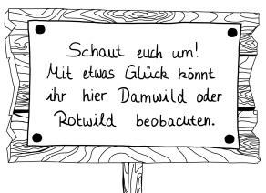
(Zum Umdrehen antippen)
Frage: Was fressen Hirsche?
Station 5
Waldtypen im Wildpark
Folge dem Weg bis zu dem Nistkasten am Baum und schaue zurück.
Frage: Welche unterschiedlichen Waldtypen kennst du?
Nenne 2!
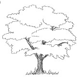
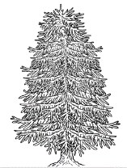
Station 6
Nistkästen
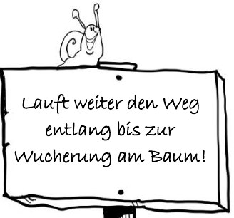
Der Wald bietet Lebensraum für viele Pflanzen und Tiere. Zusätzlich werden in Wäldern immer wieder Nistkästen durch den Menschen aufgehängt.
Frage: Warum glaubst du, ist das wichtig?
- Der Mensch hängt Nistkästen zur Dekoration in den Wald. (Z)
- In den Nistkästen leben Eichhörnchen. (B)
- Häufig nisten Vögel in abgestorbenen Bäumen (=Totholz). Da es immer weniger Totholz gibt, schafft der Mensch zusätzliche Nistplätze. (E)
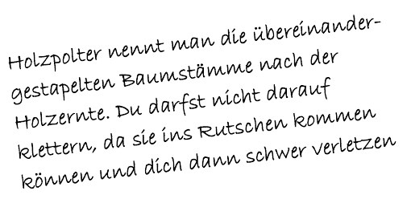
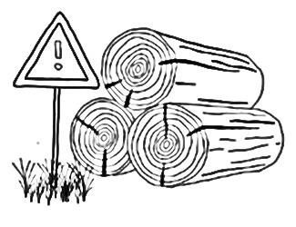
Station 7
Gleichgewichtstraining
Aufgabe: Such dir einen freiliegenden Baumstamm zum Balancieren aus. Nun überquere ihn vorwärts, rückwärts, seitwärts…
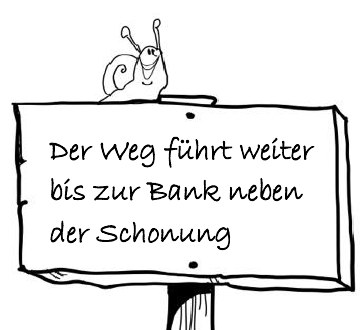
Station 8
Damwild – Rätsellabyrinth
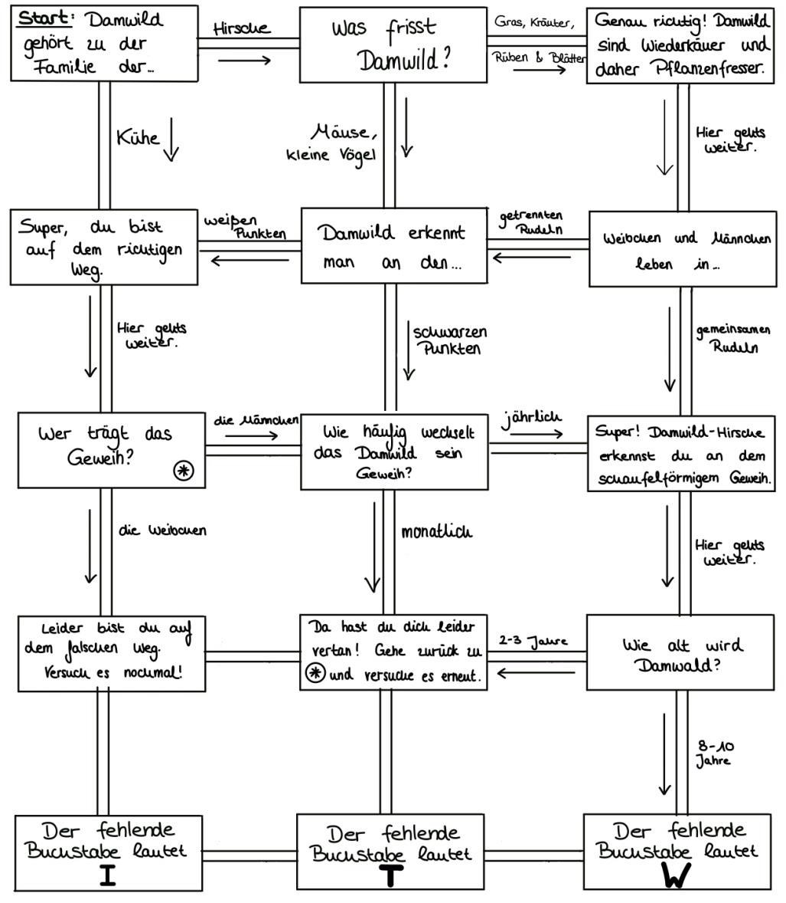
(Bild antippen zum Vergrößern)
Station 9
Abgestorbene oder „kranke“ Fichten
Die Trockenheit der letzten Jahre schwächt die Abwehrkräfte der Bäume. Schädlinge können sich massenhaft vermehren. Sie bohren sich durch die Rinde und legen dort Brutkammern für die Eiablage an. Die geschlüpften Larven zerstören durch ihre Fraßgänge die Leitungsbahnen der Bäume. Die Bäume können sich nicht mehr mit Wasser und Nährstoffen versorgen und sterben ab. Immer mehr Fichtenbestände in Deutschland sind betroffen. Auch hier hat solch ein Schädling gewütet!
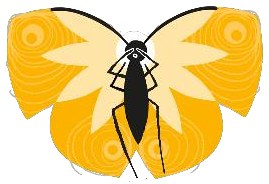
Frage: Wie heißt der Schädling?
Station 10
Samenfresser
Anhand der Tannenzapfenreste kannst du erkennen, welche Tiere daran gefressen haben.
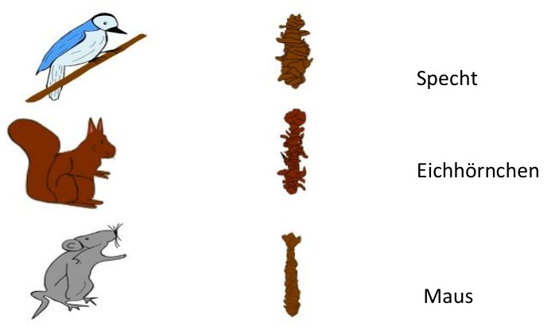
Aufgabe: Suche im Wald nach Zapfen, die angefressen wurden!
Station 11
Waldschätze suchen
Folge dem Weg! Auf dem Waldboden findest du viele spannende Dinge, die die Tiere und Pflanzen im Laufe der Jahre „verlieren“.
Aufgabe: Suche die folgenden Gegenstände: Etwas Rundes, etwas Weiches, etwas Spitzes und etwas Hartes, etwas Schönes, etwas Besonderes, verschiedene Farben … Was findest du noch?
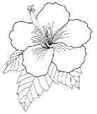
Station 12
Mandala legen
Puh, da haben wir ja nun schon einige aufregende Sachen entdeckt! Macht doch mal eine Pause auf den Bänken oder legt zur Entspannung ein Wald-Mandala! Bringt andere Besucher zum Staunen.
Aufgabe: Schicke uns ein Foto von deinem Wildpark-Mandala ins Biologische Zentrum: info@biologisches-zentrum.de - gerne mit deinem Namen. Kennwort: Wildpark-Mandala! Eure Fotos werden auf unserer Homepage veröffentlicht!
Station 13
Horcht mal!
Aufgabe: Bleibe auf der großen, weitläufigen Fläche und schließe für einen Moment die Augen. Wie viele Geräusche hörst du? Kannst du die Geräusche erkennen?
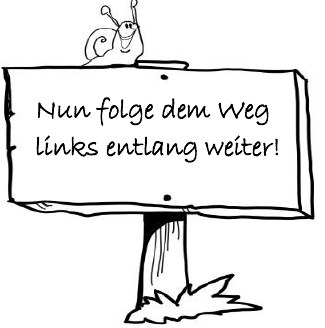
Station 14
Strauch oder kleiner Baum?
Frage: Welche Sträucher (kleine Bäume) wachsen auf der linken Seite des Weges?
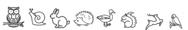
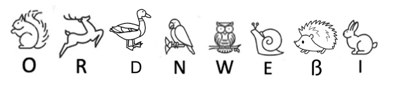
Station 15
Baumgruppe
Auf der linken Seite findest du eine Bank mitten in einer Baumgruppe! Setze dich hin und genieße die Atmosphäre.
Frage: Wie heißen die Bäume, die dich umgeben? (vgl.Seite 3)
Station 16
Jahresringe der Bäume
Gehe weiter bis du links im Wald mehrere Baumstümpfe findest. Manche Baumarten können bei guten Bedingungen und gesundem Wachstum mehrere hundert Jahre alt werden. Wird ein Baum gefällt, kann man an der Baumscheibe die Jahresringe sehen. Im Frühjahr wächst der Baum schneller und es entsteht eine helle Schicht; im Sommer und Herbst wächst der Baum langsamer und es entsteht eine dunklere und dünnere Schicht.
Aufgabe: Suche dir einen Baumstamm aus. Zähle die Jahresringe und du erfährst wie alt der Baum ist! Betrachte die Dicke der Jahresringe und du erfährst, ob die Wachstumsbedingungen in dem Jahr gut waren.
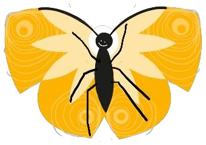
Tipp: Findest du hier keine geeignete Baumscheibe, merke dir die Aufgabe für deinen nächsten Waldspaziergang!
Station 17
Familienfoto
Aufgabe: Schieß ein lustiges Erinnerungsfoto von euch, um dich immer an euren Ausflug in den Wildpark erinnern zu können!
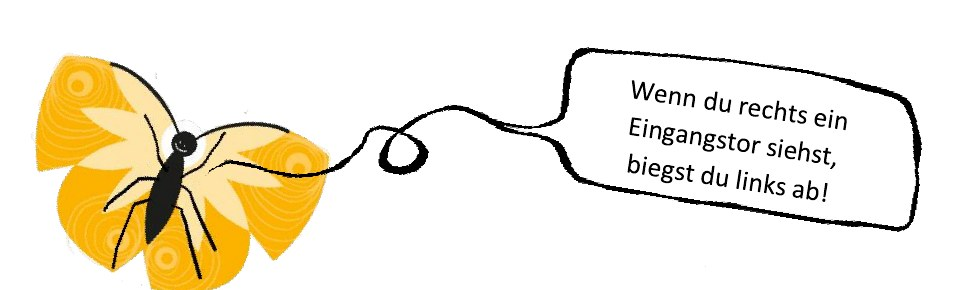
Station 18
„Lecksteine“ für Wildtiere
Im Wald hat der Förster in Ruhezonen für die Waldtiere Lecksteine aufgestellt! Sie liegen versteckt, damit die Tiere nicht gestört werden. Tipp: Suche sie nicht!
Frage: Was glaubst du, warum werden Lecksteine in den Wald gelegt?
(Zum Umdrehen antippen)
Frage: Womit versorgen Lecksteine die Tiere?
Station 19
Aussichtspunkt
Auf der rechten Seite siehst du einen Hügel, von dem aus du einen weiten Ausblick hast! Laufe noch ein Stück weiter, von dort aus kommst du am besten den Hügel hoch. Von oben hast du eine wunderbare Aussicht auf den gesamten Wildpark!
Aufgabe: Genieß die Aussicht und schau, welche Tiere du entdecken kannst.
Station 20
Wettrennen
Aufgabe: Suche dir eine Startlinie auf dem Weg aus und starte ein Wettrennen. Wer schafft es, als erstes an der Brücke zu sein?
Herzlichen Glückwunsch!
Nun hast Du alle Aufgaben erledigt!
Setze die gefundenen Buchstaben hier ein und finde den Lösungssatz!
und unsere Umwelt!
Die Buchstaben werden automatisch aus deinen Antworten an den Stationen übernommen. Tippe auf ein leeres Kästchen, um zur passenden Station zu springen.
Meine Antworten
Übersicht zum Übertragen auf den Ausdruck
Name:
Tipp: Mach von dieser Seite einen Screenshot. Deine Eingaben werden zwar automatisch auf diesem Gerät gespeichert, gehen aber verloren, wenn die Browserdaten gelöscht werden oder du ein anderes Gerät benutzt.
Material
- 1 Broschüre: Wildpark-Rallye
- Fernglas
- Smartphone (Fotoapparat)
- Stift und Zettel
- Picknick
Impressum + Layout
Biologisches Zentrum Kreis Coesfeld
Rohrkamp 29
59348 Lüdinghausen
www.biologisches-zentrum.de
info@biologisches-zentrum.de
Tel.: 02591/4129
Redaktion
Biologisches Zentrum Kreis Coesfeld
Texte und Ideen
Gianna Castelluzzo
Bild- und Literaturquellen
Waldtiere und Bäume: www.pixabay.com; www.flickr.com
Kamerasymbole: OpenClipart-Vectors auf Pixabay
Schmetterlinge: Johanna Overkamp
Projektförderung
Bildung für nachhaltige Entwicklung
Lüdinghausen 2021
Diese App ist eine inoffizielle, private digitale Fassung der gedruckten Wildpark-Rallye (Stand 17.01.2022) des Biologischen Zentrums Kreis Coesfeld. Texte und Bilder stammen aus der Original-Broschüre.